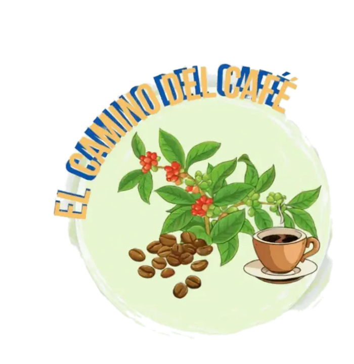
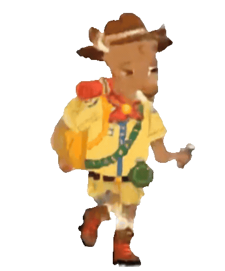

Una historia que germina en nuestra huerta escolar
Los niños y niñas de primero exploraron la huerta, entrevistaron a sus abuelos y familias y registraron todo lo que descubrieron sobre la planta del café y el Paisaje Cultural Cafetero.
Así investigamos
¿Quién recorre el camino del café?
Elijan de 2 a 4 personajes, uno por equipo. Tiren el dado y avancen por la finca. En cada casilla verán una foto o un video y luego responderán una pregunta: si aciertan, recogen granos. Gana quien primero llene su costal.
¿Cuántos granos llenan el costal?
La investigación de grado primero
Queríamos conocer la planta del café de nuestra huerta escolar: cómo es, qué necesita para crecer y qué saben de ella nuestros abuelos y familias. Investigamos en cuatro momentos.
Ficha
Técnicas e instrumentos
| Técnica | Evidencia |
|---|---|
| Observación directa | Fichas de observación |
| Exploración del entorno | Fotografías y dibujos científicos |
| Entrevistas | Preguntas y testimonios en video |
| Consulta documental | Videos y materiales informativos |
| Registro de experiencias | Audios, tips y relatos de los estudiantes |
| Socialización | Periódico digital escolar |